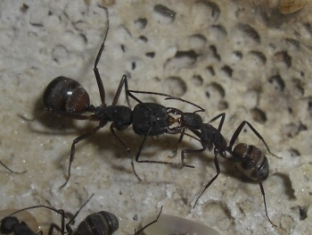

Trophallaxis
{kind=link}

Trophallaxis: Der Inhalt des Kropfes einer Arbeiterin wird hervorgewürgt (Regurgitation, regurgitieren), so dass andere Arbeiterinnen, Königinnen oder Larven das stets flüssige Futter aufnehmen können. Feste Nahrungssubstanzen, Bröckchen von Insektenbeute etc., werden vor allem an Larven verteilt, die sie fressen können. Adulte Ameisen können keine festen Partikel schlucken.
Der Kropfinhalt kann aus Honigtau oder Hämolymphe von Beutetieren bestehen. Oft werden auch Nährsekrete aus den Drüsen im Kopfbereich zunächst verschluckt und dann separat bzw. mit Kropfinhalt vermischt regurgitiert.
Der Austausch
Die Übergabe von Kropfnahrung geht in der Regel unter auffallendem Fühlerspiel der beteiligten zwei oder auch gelegentlich mehr Arbeiterinnen vor sich. Hungrige Arbeiterinnen betteln durch Betasten der Fühler und der Mundteile einer Nestgenossin, die daraufhin ein Futtertröpfchen hochwürgt. Auch das Anbieten von Futter kommt vor: Arbeiterinnen mit sehr vollem Kropf tragen ein Futtertröpfchen zwischen den Mandibeln umher, das so leicht von anderen Ameisen mit den Antennen entdeckt werden kann.

verschieden Arten der Nahrungsweitergabe
Man unterscheidet zwischen stomodaealer Trophallaxis, der Abgabe flüssiger Substanzen aus dem Mund, und proctodaealer Trophallaxis. Bei letzterer werden Nährstoffe über die hintere Körperöffnung abgegeben und von Nestgenossinnen aufgeleckt. Das ist in der Regel kein Kot, sondern z.B. der formlose Inhalt von Eiern, der reich an Dotterproteinen ist. Werden komplette, scheinbar normale Eier abgelegt, die dann gleich an Larven verfüttert werden, so spricht man von Nähreiern.
Arten ohne Trophallaxis
Trophallaxis kommt nicht bei allen Ameisen vor. Laut Dumpert (1994) ist die Weitergabe flüssiger Nahrung eine Verhaltensweise, die vor allem bei den am höchsten entwickelten Ameisengruppen vorkommt. Sie fehlt bei besonders urtümlichen Ameisen und auch bei höher entwickelten Arten, die keine flüssige Nahrung eintragen. Das sind vor allem die ausschließlich räuberischen Arten und die spezialisierten Pflanzenfresser wie Körnersammler oder Pilzzüchter. Auch einige Bewohner von Ameisenpflanzen zeigen keine Trophallaxis.
Siehe auch
Literatur
- Dumpert, K. (1994): Das Sozialleben der Ameisen. 2. Aufl. Verl. Paul Parey, 257 pp.
- Baroni Urbani, C. (1991): Evolutionary aspects of foraging efficiency and niche shift in two sympatric seed-harvesting ants (Messor) (Hymenoptera Formicidae). Ethology Ecology & Evolution, Special Issue 1: 75-79.